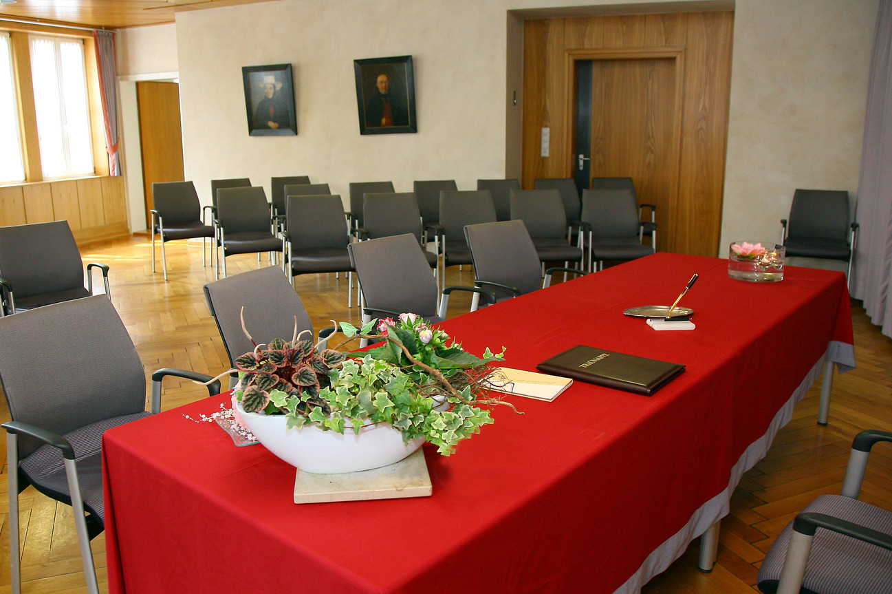
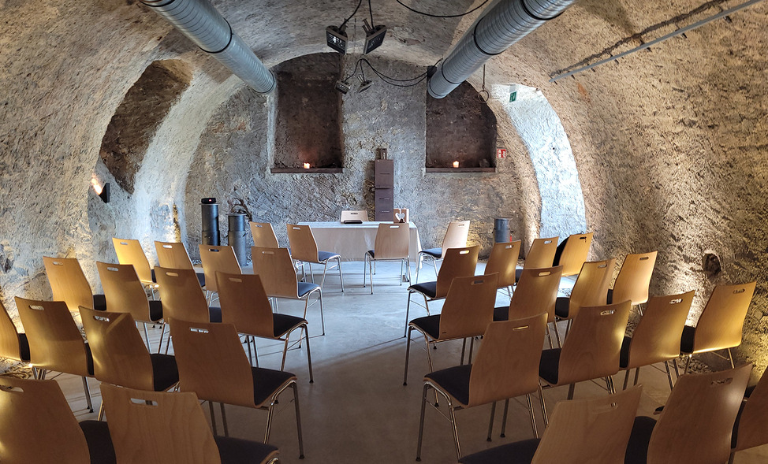
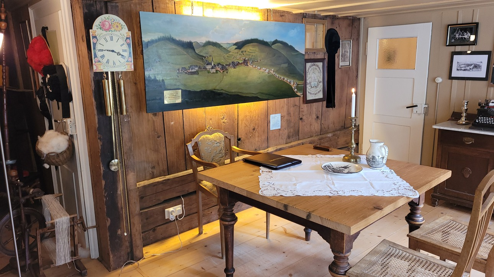

Trauzimmer
Hier können Sie sich über die Trauzimmer in Furtwangen informieren.
Trauungsorte
Furtwanger Bürgersaal
Rösslekeller in Neukirch
Museum Gasthaus Arche in Furtwangen

Adresse
Marktpl. 2, 78120 Furtwangen im Schwarzwald

Adresse
Hauptstraße 10, 78120 Furtwangen im Schwarzwald
Ansprechpartner
Frau Ute Weißer
max.mustermann@furtwangen.de

Adresse
Katzensteigstraße 1, 78120 Furtwangen im Schwarzwald